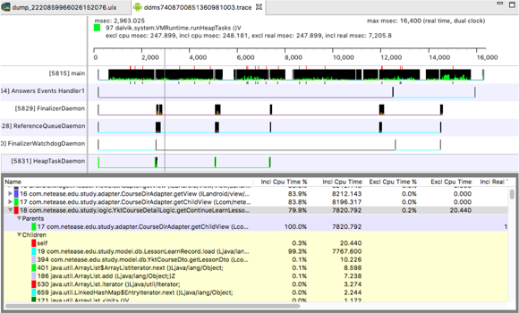

AS性能调试工具的使用
使用Dump Heap调试内存问题：
Dump Java Heap前执行一次Full GC操作
这样会减少很多无用的对象。点击之后，有时候能够明显看出内存变化
点击Dump Java Heap分析内存对象占用
有一个10M大小的Bitmap被gpuimage里面的模块把持住了。通过这些信息，基本就可以解决绝大部分OOM问题
使用Allocation Tracking工具分析内存分配：
默认选择Group by Method模式下，可以观察到执行单个方法总共分配内存的次数，及内存占用的字节数
Count：分配内存次数 Size：占用内存大小 byte字节)
手动选择Group by Allocator模式下，可以观察到每个类所消耗内存的大小，及分配了多少次内存 即类中new了多少个变量
PS : Allocation Tracking工具可以很直观的分析app在运行过程中内存分配情况，供开发人员追踪分析可能存在问题的代码
使用TraceView工具对性能调优：

从上图可以看出YktCourseDetailLogic.getContinueLearnLesson里调用了底层数据库查询操作，CPU执
行单个数据查询操作耗时20ms。并且被getChildView方法调用，在UI线程中更新视图不得超过16ms，否则产生卡顿
|
|